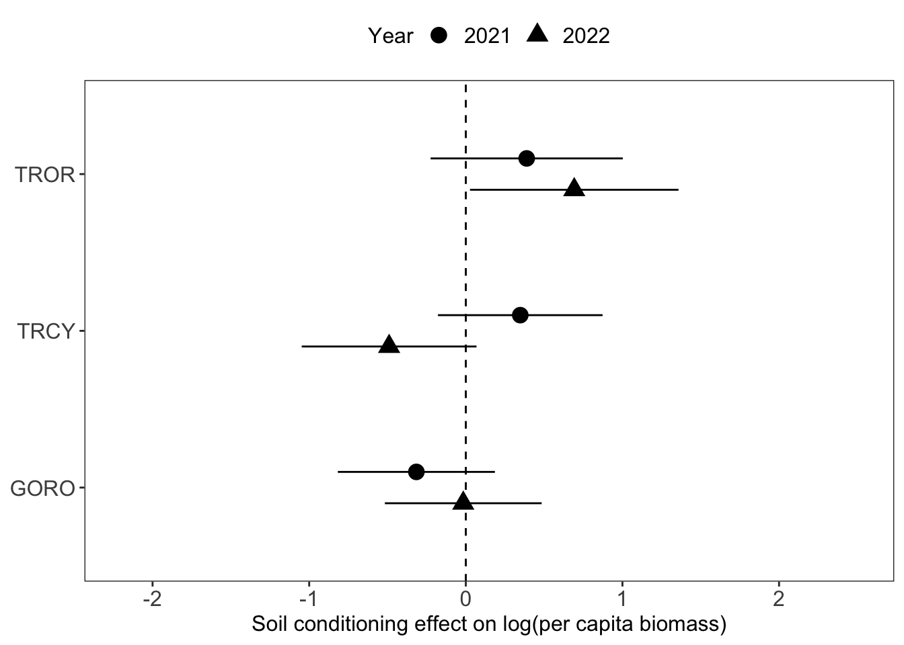
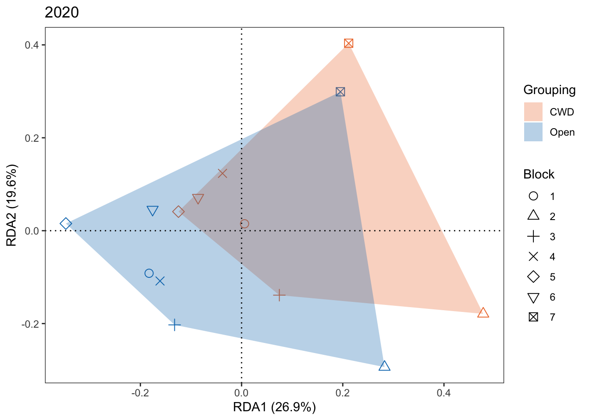

Code
require(lme4)
require(emmeans)
require(pscl)
require(glmmTMB)
require(tidyr)
require(DHARMa)
require(ggplot2)
require(AICcmodavg)
require(ggpubr)
require(dplyr)require(lme4)
require(emmeans)
require(pscl)
require(glmmTMB)
require(tidyr)
require(DHARMa)
require(ggplot2)
require(AICcmodavg)
require(ggpubr)
require(dplyr)countdat2021<-read.csv('germinant_countdata_2021.csv', header=T)
countdat2022<-read.csv('germinant_countdata_2022.csv', header=T)
pcwtdat2021<-read.csv('pcwtdata_2021.csv', header=T)
pcwtdat2022<-read.csv('pcwtdata_2022.csv', header=T)zerofit_add <- glmmTMB(presence ~ name*physical_barrier + # Response variable: 0/1 of germinant; Predictor1: species name x physical barrier (0/1)
name*initial + # Predictor2: species name x soil conditioning (cwd/open)
(1 | block), # replicate block as random variable
family=binomial,
data=countdat2021,
REML=FALSE)
summary(zerofit_add) # model summary Family: binomial ( logit )
Formula:
presence ~ name * physical_barrier + name * initial + (1 | block)
Data: countdat2021
AIC BIC logLik deviance df.resid
457.2 495.4 -218.6 437.2 326
Random effects:
Conditional model:
Groups Name Variance Std.Dev.
block (Intercept) 0.1626 0.4032
Number of obs: 336, groups: block, 7
Conditional model:
Estimate Std. Error z value Pr(>|z|)
(Intercept) -0.10812 0.37027 -0.292 0.7703
namentrcy 0.07597 0.47689 0.159 0.8734
namentror -0.45605 0.48469 -0.941 0.3468
physical_barrier 0.36480 0.39722 0.918 0.3584
initialopen 0.61588 0.39786 1.548 0.1216
namentrcy:physical_barrier 0.47896 0.56163 0.853 0.3938
namentror:physical_barrier 0.60598 0.56826 1.066 0.2863
namentrcy:initialopen -1.09929 0.56252 -1.954 0.0507 .
namentror:initialopen -1.19821 0.56815 -2.109 0.0349 *
---
Signif. codes: 0 '***' 0.001 '**' 0.01 '*' 0.05 '.' 0.1 ' ' 1Species-specific germination response to soil conditioning effect in 2021.
soil.2021 <- pairs(emmeans(zerofit_add, ~ initial | name)) # Pairwise contrasts of soil conditioning effect (cwd vs. open) for each species
print(soil.2021) # p value tells you if the contrast between log (i.e. CWD) and open is significantly different to 0name = ngoro:
contrast estimate SE df z.ratio p.value
log - open -0.616 0.398 Inf -1.548 0.1216
name = ntrcy:
contrast estimate SE df z.ratio p.value
log - open 0.483 0.397 Inf 1.217 0.2236
name = ntror:
contrast estimate SE df z.ratio p.value
log - open 0.582 0.405 Inf 1.438 0.1506
Results are averaged over the levels of: physical_barrier
Results are given on the log odds ratio (not the response) scale. soil.2021.ci <- confint(soil.2021) # Extract confidence intervals for the contrasts
soil.2021.ci$name<-c(rep("GORO", 1), rep("TRCY",1), rep("TROR",1)) # Annotate the result with species names
soil.2021.ci$year <-c(rep("2021", 3))
#print(soil.2021.ci)
soil.int.2021 <- as.data.frame(contrast(emmeans(zerofit_add, ~initial|name), interaction = c("pairwise"), by = NULL)) # Check interaction-level contrast: do species differ in their response the soil conditioning effect of CWD?
soil.int.2021$name_pairwise<-c(rep("GORO - TRCY", 1),
rep("GORO - TROR",1),
rep("TRCY - TROR",1))
soil.int.2021$year <-c(rep("2021", 3))
print(soil.int.2021) initial_pairwise name_pairwise estimate SE df z.ratio p.value year
log - open GORO - TRCY -1.0992908 0.5625168 Inf -1.954 0.0507 2021
log - open GORO - TROR -1.1982094 0.5681497 Inf -2.109 0.0349 2021
log - open TRCY - TROR -0.0989185 0.5670401 Inf -0.174 0.8615 2021
Results are averaged over the levels of: physical_barrier
Results are given on the log odds ratio (not the response) scale. Species-specific germination response to physical barrier effect in 2021.
phy.2021 <- pairs(emmeans(zerofit_add, ~physical_barrier|name)) # Pairwise contrasts of physical barrier effect (cwd vs. open) for each species
print(phy.2021)name = ngoro:
contrast estimate SE df z.ratio p.value
physical_barrier0 - physical_barrier1 -0.365 0.397 Inf -0.918 0.3584
name = ntrcy:
contrast estimate SE df z.ratio p.value
physical_barrier0 - physical_barrier1 -0.844 0.398 Inf -2.122 0.0338
name = ntror:
contrast estimate SE df z.ratio p.value
physical_barrier0 - physical_barrier1 -0.971 0.407 Inf -2.385 0.0171
Results are averaged over the levels of: initial
Results are given on the log odds ratio (not the response) scale. phy.2021.ci <- confint(phy.2021) # Extract confidence intervals for the contrasts
phy.2021.ci$name<-c(rep("GORO", 1), rep("TRCY",1), rep("TROR",1)) # Annotate the result with species names
phy.2021.ci$year <-c(rep("2021", 3))
#print(phy.2021.ci)
phy.int.2021 <- as.data.frame(contrast(emmeans(zerofit_add, ~ physical_barrier|name), interaction = c("pairwise"), by = NULL)) # Check interaction-level contrast: do species differ in their response the physical barrier effect of CWD?
phy.int.2021$name_pairwise<-c(rep("GORO - TRCY", 1), rep("GORO - TROR",1), rep("TRCY - TROR",1))
phy.int.2021$year <-c(rep("2021", 3))
print(phy.int.2021) physical_barrier_pairwise name_pairwise estimate SE df z.ratio
0 - 1 GORO - TRCY 0.4789590 0.5616300 Inf 0.853
0 - 1 GORO - TROR 0.6059774 0.5682627 Inf 1.066
0 - 1 TRCY - TROR 0.1270183 0.5680268 Inf 0.224
p.value year
0.3938 2021
0.2863 2021
0.8231 2021
Results are averaged over the levels of: initial
Results are given on the log odds ratio (not the response) scale. zerofit_add<-glmmTMB(presence ~ name*physical_barrier + # Response: 0/1 of germinants
# Predictor1: species name x physical barrier (0/1)
name*initial + #Predictor2: species name x soil conditioning (cwd/open)
(1 | block), # Random variable: block
family=binomial,
data=countdat2022,
REML=F)
summary(zerofit_add) Family: binomial ( logit )
Formula:
presence ~ name * physical_barrier + name * initial + (1 | block)
Data: countdat2022
AIC BIC logLik deviance df.resid
430.2 468.3 -205.1 410.2 326
Random effects:
Conditional model:
Groups Name Variance Std.Dev.
block (Intercept) 0.2301 0.4797
Number of obs: 336, groups: block, 7
Conditional model:
Estimate Std. Error z value Pr(>|z|)
(Intercept) 0.46829 0.39088 1.198 0.2309
namentrcy_tot 0.38079 0.50971 0.747 0.4550
namentror_tot -0.26455 0.48701 -0.543 0.5870
physical_barrier -0.02049 0.40340 -0.051 0.9595
initialopen 0.24376 0.40345 0.604 0.5457
namentrcy_tot:physical_barrier 1.24985 0.60881 2.053 0.0401 *
namentror_tot:physical_barrier 0.90138 0.57391 1.571 0.1163
namentrcy_tot:initialopen -1.23613 0.60711 -2.036 0.0417 *
namentror_tot:initialopen -0.58979 0.57314 -1.029 0.3035
---
Signif. codes: 0 '***' 0.001 '**' 0.01 '*' 0.05 '.' 0.1 ' ' 1Species-specific germination response to soil conditioning effect in 2022.
soil.2022 <- pairs(emmeans(zerofit_add, ~initial|name))# Pairwise contrasts of soil conditioning effect (cwd vs. open) for each species
print(soil.2022) # p value tells you if the contrast between log (i.e. CWD) and open is significantly different to 0name = ngoro_tot:
contrast estimate SE df z.ratio p.value
log - open -0.244 0.403 Inf -0.604 0.5457
name = ntrcy_tot:
contrast estimate SE df z.ratio p.value
log - open 0.992 0.453 Inf 2.189 0.0286
name = ntror_tot:
contrast estimate SE df z.ratio p.value
log - open 0.346 0.407 Inf 0.850 0.3951
Results are averaged over the levels of: physical_barrier
Results are given on the log odds ratio (not the response) scale. soil.2022.ci <- confint(soil.2022) # Extract confidence intervals for the contrasts
soil.2022.ci$name<-c(rep("GORO", 1), rep("TRCY",1), rep("TROR",1)) # Annotate the result with species names and year
soil.2022.ci$year <-c(rep("2022", 3))
#print(soil.2022.ci)
soil.int.2022 <- as.data.frame(contrast(emmeans(zerofit_add, ~initial|name), interaction = c("pairwise"), by = NULL)) # Check interaction-level contrast: do species differ in their response the soil conditioning effect of CWD?
soil.int.2022$name_pairwise<-c(rep("GORO - TRCY", 1), rep("GORO - TROR",1), rep("TRCY - TROR",1))
soil.int.2022$year <-c(rep("2022", 3))
print(soil.int.2022) initial_pairwise name_pairwise estimate SE df z.ratio p.value year
log - open GORO - TRCY -1.2361265 0.6071093 Inf -2.036 0.0417 2022
log - open GORO - TROR -0.5897881 0.5731358 Inf -1.029 0.3035 2022
log - open TRCY - TROR 0.6463384 0.6086866 Inf 1.062 0.2883 2022
Results are averaged over the levels of: physical_barrier
Results are given on the log odds ratio (not the response) scale. Species-specific germination response to physical barrier effect in 2022.
phy.2022 <- pairs(emmeans(zerofit_add, ~physical_barrier|name)) # Pairwise contrasts of physical barrier effect (cwd vs. open) for each species
print(phy.2022) # p value tells you if the contrast between log (i.e. CWD) and open is significantly different to 0name = ngoro_tot:
contrast estimate SE df z.ratio p.value
physical_barrier0 - physical_barrier1 0.0205 0.403 Inf 0.051 0.9595
name = ntrcy_tot:
contrast estimate SE df z.ratio p.value
physical_barrier0 - physical_barrier1 -1.2294 0.456 Inf -2.694 0.0071
name = ntror_tot:
contrast estimate SE df z.ratio p.value
physical_barrier0 - physical_barrier1 -0.8809 0.408 Inf -2.156 0.0310
Results are averaged over the levels of: initial
Results are given on the log odds ratio (not the response) scale. phy.2022.ci <- confint(phy.2022) # Extract confidence intervals for the contrasts
phy.2022.ci$name<-c(rep("GORO", 1), rep("TRCY",1), rep("TROR",1))
phy.2022.ci$year <-c(rep("2022", 3)) # Annotate the result with species names and year
#print(phy.2022.ci)
phy.int.2022 <- as.data.frame(contrast(emmeans(zerofit_add, ~physical_barrier|name), interaction = c("pairwise"), by = NULL)) # Check interaction-level contrast: do species differ in their response the physical barrier effect of CWD?
phy.int.2022$name_pairwise<-c(rep("GORO - TRCY", 1), rep("GORO - TROR",1), rep("TRCY - TROR",1))
phy.int.2022$year <-c(rep("2022", 3))
print(phy.int.2022) physical_barrier_pairwise name_pairwise estimate SE df z.ratio
0 - 1 GORO - TRCY 1.2498473 0.6088093 Inf 2.053
0 - 1 GORO - TROR 0.9013793 0.5739104 Inf 1.571
0 - 1 TRCY - TROR -0.3484680 0.6107759 Inf -0.571
p.value year
0.0401 2022
0.1163 2022
0.5683 2022
Results are averaged over the levels of: initial
Results are given on the log odds ratio (not the response) scale. germ.soil <- rbind(soil.2021.ci, soil.2022.ci)
germ.soil <- germ.soil %>%
mutate(year = factor(year, levels = c("2021", "2022")))
germ.soil.sigint <- rbind(soil.int.2021, soil.int.2022)
# 4a plot for species specific germination response to soil conditioning effect
p1 <- ggplot(germ.soil, aes(x = name, y = estimate, shape = year, group = year)) +
geom_point(size = 4, position = position_dodge(width = -0.4)) +
geom_errorbar(aes(ymin = asymp.LCL, ymax = asymp.UCL), width = 0, position = position_dodge(width = -0.4)) + # CI bars
theme_bw() +
theme(strip.text.x = element_text(size = 10),
axis.text = element_text(size = 12),
axis.title = element_text(size = 12),
legend.text = element_text(size = 12),
legend.title = element_text(size = 12),
legend.position = "top",
panel.grid = element_blank()) +
coord_flip() +
labs(x=NULL,y = "Soil conditioning effect on germination", shape = "Year") +
geom_hline(yintercept = 0, linetype = "dashed", color = "black") +
ylim(-2.2, 2.5)
germ.phy <- rbind(phy.2021.ci, phy.2022.ci)
germ.phy <- germ.phy %>%
mutate(year = factor(year, levels = c("2021", "2022")))
germ.phy.sigint <- rbind(phy.int.2021, phy.int.2022)
# 4b plot for species specific germination response to physical barrier effect
p2 <- ggplot(germ.phy, aes(x = name, y = estimate, shape = year, group = year)) +
geom_point(size = 4, position = position_dodge(width = -0.4)) +
geom_errorbar(aes(ymin = asymp.LCL, ymax = asymp.UCL), width = 0, position = position_dodge(width = -0.4)) + # CI bars
theme_bw() +
theme(strip.text.x = element_text(size = 10),
axis.text = element_text(size = 12),
axis.title = element_text(size = 12),
legend.text = element_text(size = 12),
legend.title = element_text(size = 12),
legend.position = "top",
panel.grid = element_blank()) +
coord_flip() +
labs(x=NULL,y = "Physical barrier effect on germination", shape = "Year") +
geom_hline(yintercept = 0, linetype = "dashed", color = "black") +
ylim(-2.2, 2.5)
print(p1)print(p2)# soil conditioning - germination
yc_soil <- germ.soil %>%
select(name, year, estimate, SE) %>%
tidyr::pivot_wider(names_from = year, values_from = c(estimate, SE))
yc_soil <- yc_soil %>%
mutate(
diff = estimate_2022 - estimate_2021,
SE_diff = sqrt(SE_2021^2 + SE_2022^2), # assuming independence
z = diff / SE_diff,
p_value = 2 * (1 - pnorm(abs(z)))
)
print(yc_soil)# A tibble: 3 9
name estimate_2021 estimate_2022 SE_2021 SE_2022 diff SE_diff z
<chr> <dbl> <dbl> <dbl> <dbl> <dbl> <dbl> <dbl>
1 GORO -0.616 -0.244 0.398 0.403 0.372 0.567 0.657
2 TRCY 0.483 0.992 0.397 0.453 0.509 0.603 0.844
3 TROR 0.582 0.346 0.405 0.407 -0.236 0.574 -0.412
# 1 more variable: p_value <dbl># physical barrier - germination
yc_phy <- germ.phy %>%
select(name, year, estimate, SE) %>%
tidyr::pivot_wider(names_from = year, values_from = c(estimate, SE))
yc_phy <- yc_phy %>%
mutate(
diff = estimate_2022 - estimate_2021,
SE_diff = sqrt(SE_2021^2 + SE_2022^2), # assuming independence
z = diff / SE_diff,
p_value = 2 * (1 - pnorm(abs(z)))
)
print(yc_phy)# A tibble: 3 9
name estimate_2021 estimate_2022 SE_2021 SE_2022 diff SE_diff z
<chr> <dbl> <dbl> <dbl> <dbl> <dbl> <dbl> <dbl>
1 GORO -0.365 0.0205 0.397 0.403 0.385 0.566 0.681
2 TRCY -0.844 -1.23 0.398 0.456 -0.386 0.605 -0.637
3 TROR -0.971 -0.881 0.407 0.408 0.0899 0.577 0.156
# 1 more variable: p_value <dbl>pcwtmod_add<-lmer(log_wt ~ name*physical_barrier +
name*initial +
(1|block),
data=pcwtdat2021,
REML=FALSE)
# summary(pcwtmod_add)Species-specific biomass response to soil conditioning effect in 2021
soil.biomass.2021 <- pairs(emmeans(pcwtmod_add, ~initial|name))
print(soil.biomass.2021)name = wt_percapita_goro:
contrast estimate SE df t.ratio p.value
log - open -0.316 0.254 175 -1.242 0.2157
name = wt_percapita_trcy:
contrast estimate SE df t.ratio p.value
log - open 0.348 0.266 175 1.305 0.1934
name = wt_percapita_tror:
contrast estimate SE df t.ratio p.value
log - open 0.389 0.311 177 1.250 0.2130
Results are averaged over the levels of: physical_barrier
Degrees-of-freedom method: kenward-roger soil.biomass.2021.ci <- confint(soil.biomass.2021)
soil.biomass.2021.ci$name<-c(rep("GORO", 1), rep("TRCY",1), rep("TROR",1))
soil.biomass.2021.ci$year <-c(rep("2021", 3))
# print(soil.biomass.2021.ci)
soilbio.int.2021 <- as.data.frame(contrast(emmeans(pcwtmod_add, ~initial|name), interaction = c("pairwise"), by = NULL))
soilbio.int.2021$name_pairwise<-c(rep("GORO - TRCY", 1), rep("GORO - TROR",1), rep("TRCY - TROR",1))
soilbio.int.2021$year <-c(rep("2021", 3))
soilbio.int.2021 <- soilbio.int.2021 %>%
mutate(name_pairwise = as.character(name_pairwise), # Convert factor to character
group1 = sub(" - .*", "", name_pairwise), # Extract first species
group2 = sub(".* - ", "", name_pairwise), # Extract second species
label = paste0("p = ", signif(p.value, 3))) %>% # Format p-value label
filter(p.value < 0.05)
# empty soilbio.int.2021Species-specific biomass response to physical barrier effect in 2021
phy.biomass.2021 <- pairs(emmeans(pcwtmod_add, ~physical_barrier|name))
print(phy.biomass.2021)name = wt_percapita_goro:
contrast estimate SE df t.ratio p.value
physical_barrier0 - physical_barrier1 -0.542 0.254 176 -2.137 0.0340
name = wt_percapita_trcy:
contrast estimate SE df t.ratio p.value
physical_barrier0 - physical_barrier1 0.174 0.272 177 0.639 0.5235
name = wt_percapita_tror:
contrast estimate SE df t.ratio p.value
physical_barrier0 - physical_barrier1 -0.370 0.318 176 -1.165 0.2458
Results are averaged over the levels of: initial
Degrees-of-freedom method: kenward-roger phy.biomass.2021.ci <- confint(phy.biomass.2021)
phy.biomass.2021.ci$name<-c(rep("GORO", 1), rep("TRCY",1), rep("TROR",1))
phy.biomass.2021.ci$year <-c(rep("2021", 3))
print(phy.biomass.2021.ci)name = GORO:
contrast estimate SE df lower.CL upper.CL
physical_barrier0 - physical_barrier1 -0.542 0.254 176 -1.043 -0.0416
year
2021
name = TRCY:
contrast estimate SE df lower.CL upper.CL
physical_barrier0 - physical_barrier1 0.174 0.272 177 -0.363 0.7101
year
2021
name = TROR:
contrast estimate SE df lower.CL upper.CL
physical_barrier0 - physical_barrier1 -0.370 0.318 176 -0.998 0.2573
year
2021
Results are averaged over the levels of: initial
Degrees-of-freedom method: kenward-roger
Confidence level used: 0.95 phybio.int.2021 <- as.data.frame(contrast(emmeans(pcwtmod_add, ~physical_barrier|name), interaction = c("pairwise"), by = NULL))
phybio.int.2021$name_pairwise<-c(rep("GORO - TRCY", 1), rep("GORO - TROR",1), rep("TRCY - TROR",1))
phybio.int.2021$year <-c(rep("2021", 3))
phybio.int.2021 <- phybio.int.2021 %>%
mutate(name_pairwise = as.character(name_pairwise), # Convert factor to character
group1 = sub(" - .*", "", name_pairwise), # Extract first species
group2 = sub(".* - ", "", name_pairwise), # Extract second species
label = paste0("p = ", signif(p.value, 3))) %>% # Format p-value label
filter(p.value < 0.05) # 0 rowpcwtmod_add<-lm(log_wt ~ name * physical_barrier +
name * initial,
data=pcwtdat2022)
summary(pcwtmod_add)
Call:
lm(formula = log_wt ~ name * physical_barrier + name * initial,
data = pcwtdat2022)
Residuals:
Min 1Q Median 3Q Max
-2.87872 -0.59500 -0.08939 0.57942 2.15811
Coefficients:
Estimate Std. Error t value Pr(>|t|)
(Intercept) -1.90378 0.22589 -8.428 3.30e-14 ***
namewt_percapita_trcy -2.07350 0.32974 -6.288 3.61e-09 ***
namewt_percapita_tror -1.80543 0.36729 -4.916 2.38e-06 ***
physical_barrier 0.32174 0.25321 1.271 0.2059
initialopen 0.01628 0.25321 0.064 0.9488
namewt_percapita_trcy:physical_barrier -0.22108 0.37496 -0.590 0.5564
namewt_percapita_tror:physical_barrier -0.32465 0.42136 -0.770 0.4423
namewt_percapita_trcy:initialopen 0.47343 0.37919 1.249 0.2139
namewt_percapita_tror:initialopen -0.70855 0.42136 -1.682 0.0948 .
---
Signif. codes: 0 '***' 0.001 '**' 0.01 '*' 0.05 '.' 0.1 ' ' 1
Residual standard error: 0.9918 on 144 degrees of freedom
(183 observations deleted due to missingness)
Multiple R-squared: 0.5531, Adjusted R-squared: 0.5283
F-statistic: 22.28 on 8 and 144 DF, p-value: < 2.2e-16Species-specific biomass response to soil conditioning effect in 2022
# biomass, 2022, soil conditioning
soil.biomass.2022 <- pairs(emmeans(pcwtmod_add, ~initial|name))
print(soil.biomass.2022)name = wt_percapita_goro:
contrast estimate SE df t.ratio p.value
log - open -0.0163 0.253 144 -0.064 0.9488
name = wt_percapita_trcy:
contrast estimate SE df t.ratio p.value
log - open -0.4897 0.282 144 -1.735 0.0849
name = wt_percapita_tror:
contrast estimate SE df t.ratio p.value
log - open 0.6923 0.337 144 2.055 0.0416
Results are averaged over the levels of: physical_barrier soil.biomass.2022.ci <- confint(soil.biomass.2022)
soil.biomass.2022.ci$name<-c(rep("GORO", 1), rep("TRCY",1), rep("TROR",1))
soil.biomass.2022.ci$year <-c(rep("2022", 3))
print(soil.biomass.2022.ci)name = GORO:
contrast estimate SE df lower.CL upper.CL year
log - open -0.0163 0.253 144 -0.5168 0.4842 2022
name = TRCY:
contrast estimate SE df lower.CL upper.CL year
log - open -0.4897 0.282 144 -1.0476 0.0682 2022
name = TROR:
contrast estimate SE df lower.CL upper.CL year
log - open 0.6923 0.337 144 0.0266 1.3579 2022
Results are averaged over the levels of: physical_barrier
Confidence level used: 0.95 soilbio.int.2022 <- as.data.frame(contrast(emmeans(pcwtmod_add, ~initial|name), interaction = c("pairwise"), by = NULL))
soilbio.int.2022$name_pairwise<-c(rep("GORO - TRCY", 1), rep("GORO - TROR",1), rep("TRCY - TROR",1))
soilbio.int.2022$year <-c(rep("2022", 3))
soilbio.int.2022 <- soilbio.int.2022 %>%
mutate(name_pairwise = as.character(name_pairwise), # Convert factor to character
group1 = sub(" - .*", "", name_pairwise), # Extract first species
group2 = sub(".* - ", "", name_pairwise), # Extract second species
label = paste0("p = ", signif(p.value, 3))) %>% # Format p-value label
filter(p.value < 0.05)
print(soilbio.int.2022) initial_pairwise name_pairwise estimate SE df t.ratio p.value
1 log - open TRCY - TROR -1.181973 0.4394226 144 -2.689832 0.007993502
year group1 group2 label
1 2022 TRCY TROR p = 0.00799Species-specific biomass response to physical barrier effect in 2022
# biomass, 2022, physical barrier
phy.biomass.2022 <- pairs(emmeans(pcwtmod_add, ~physical_barrier|name))
print(phy.biomass.2022)name = wt_percapita_goro:
contrast estimate SE df t.ratio p.value
physical_barrier0 - physical_barrier1 -0.32174 0.253 144 -1.271 0.2059
name = wt_percapita_trcy:
contrast estimate SE df t.ratio p.value
physical_barrier0 - physical_barrier1 -0.10066 0.277 144 -0.364 0.7164
name = wt_percapita_tror:
contrast estimate SE df t.ratio p.value
physical_barrier0 - physical_barrier1 0.00291 0.337 144 0.009 0.9931
Results are averaged over the levels of: initial phy.biomass.2022.ci <- confint(phy.biomass.2022)
phy.biomass.2022.ci$name<-c(rep("GORO", 1), rep("TRCY",1), rep("TROR",1))
phy.biomass.2022.ci$year <-c(rep("2022", 3))
print(phy.biomass.2022.ci)name = GORO:
contrast estimate SE df lower.CL upper.CL
physical_barrier0 - physical_barrier1 -0.32174 0.253 144 -0.822 0.179
year
2022
name = TRCY:
contrast estimate SE df lower.CL upper.CL
physical_barrier0 - physical_barrier1 -0.10066 0.277 144 -0.647 0.446
year
2022
name = TROR:
contrast estimate SE df lower.CL upper.CL
physical_barrier0 - physical_barrier1 0.00291 0.337 144 -0.663 0.669
year
2022
Results are averaged over the levels of: initial
Confidence level used: 0.95 phybio.int.2022 <- as.data.frame(contrast(emmeans(pcwtmod_add, ~physical_barrier|name), interaction = c("pairwise"), by = NULL))
phybio.int.2022$name_pairwise<-c(rep("GORO - TRCY", 1), rep("GORO - TROR",1), rep("TRCY - TROR",1))
phybio.int.2022$year <-c(rep("2022", 3))
phybio.int.2022 <- phybio.int.2022 %>%
mutate(name_pairwise = as.character(name_pairwise), # Convert factor to character
group1 = sub(" - .*", "", name_pairwise), # Extract first species
group2 = sub(".* - ", "", name_pairwise), # Extract second species
label = paste0("p = ", signif(p.value, 3))) %>% # Format p-value label
filter(p.value < 0.05)
print(phybio.int.2022) # 0 row [1] physical_barrier_pairwise name_pairwise
[3] estimate SE
[5] df t.ratio
[7] p.value year
[9] group1 group2
[11] label
<0 rows> (or 0-length row.names)bio.soil <- rbind(soil.biomass.2021.ci, soil.biomass.2022.ci)
bio.soil <- bio.soil %>%
mutate(year = factor(year, levels = c("2021", "2022")))
bio.soil.sigint <- rbind(soilbio.int.2021, soilbio.int.2022)
# 4c species-specific biomass response to soil conditioning effect
p3 <- ggplot(bio.soil, aes(x = name, y = estimate, shape = year, group = year)) +
geom_point(size = 4, position = position_dodge(width = -0.4)) +
geom_errorbar(aes(ymin = lower.CL, ymax = upper.CL), width = 0, position = position_dodge(width = -0.4)) + # CI bars
theme_bw() +
theme(strip.text.x = element_text(size = 10),
axis.text = element_text(size = 12),
axis.title = element_text(size = 12),
legend.text = element_text(size = 12),
legend.title = element_text(size = 12),
legend.position = "top",
panel.grid = element_blank()) +
coord_flip() +
labs(x=NULL,y = "Soil conditioning effect on log(per capita biomass)", shape = "Year") +
geom_hline(yintercept = 0, linetype = "dashed", color = "black") +
ylim(-2.2, 2.5)
bio.phy <- rbind(phy.biomass.2021.ci, phy.biomass.2022.ci)
bio.phy <- bio.phy %>%
mutate(year = factor(year, levels = c("2021", "2022")))
bio.phy.sigint <- rbind(phybio.int.2021, phybio.int.2022)
# 4d species-specific biomass response to physical barrier effect
p4 <- ggplot(bio.phy, aes(x = name, y = estimate, shape = year, group = year)) +
geom_point(size = 4, position = position_dodge(width = -0.4)) +
geom_errorbar(aes(ymin = lower.CL, ymax = upper.CL), width = 0, position = position_dodge(width = -0.4)) + # CI bars
theme_bw() +
theme(strip.text.x = element_text(size = 10),
axis.text = element_text(size = 12),
axis.title = element_text(size = 12),
legend.text = element_text(size = 12),
legend.title = element_text(size = 12),
legend.position = "top",
panel.grid = element_blank()) +
coord_flip() +
labs(x=NULL,y = "Physical barrier effect on log(per capita biomass)", shape = "Year",
title = "4d") +
geom_hline(yintercept = 0, linetype = "dashed", color = "black") +
ylim(-2.2, 2.5)
print(p3)Warning: `position_dodge()` requires non-overlapping x intervals.
print(p4)Warning: `position_dodge()` requires non-overlapping x intervals.# soil conditioning - biomass
yc_soil_biomass <- bio.soil %>%
select(name, year, estimate, SE) %>%
tidyr::pivot_wider(names_from = year, values_from = c(estimate, SE))
yc_soil_biomass <- yc_soil_biomass %>%
mutate(
diff = estimate_2022 - estimate_2021,
SE_diff = sqrt(SE_2021^2 + SE_2022^2), # assuming independence
z = diff / SE_diff,
p_value = 2 * (1 - pnorm(abs(z)))
)
print(yc_soil_biomass)# A tibble: 3 9
name estimate_2021 estimate_2022 SE_2021 SE_2022 diff SE_diff z
<chr> <dbl> <dbl> <dbl> <dbl> <dbl> <dbl> <dbl>
1 GORO -0.316 -0.0163 0.254 0.253 0.299 0.359 0.835
2 TRCY 0.348 -0.490 0.266 0.282 -0.837 0.388 -2.16
3 TROR 0.389 0.692 0.311 0.337 0.304 0.458 0.662
# 1 more variable: p_value <dbl># physical barrier - biomass
yc_phy_biomass <- bio.phy %>%
select(name, year, estimate, SE) %>%
tidyr::pivot_wider(names_from = year, values_from = c(estimate, SE))
yc_phy_biomass <- yc_phy_biomass %>%
mutate(
diff = estimate_2022 - estimate_2021,
SE_diff = sqrt(SE_2021^2 + SE_2022^2), # assuming independence
z = diff / SE_diff,
p_value = 2 * (1 - pnorm(abs(z)))
)
print(yc_phy_biomass)# A tibble: 3 9
name estimate_2021 estimate_2022 SE_2021 SE_2022 diff SE_diff z
<chr> <dbl> <dbl> <dbl> <dbl> <dbl> <dbl> <dbl>
1 GORO -0.542 -0.322 0.254 0.253 0.221 0.359 0.616
2 TRCY 0.174 -0.101 0.272 0.277 -0.274 0.388 -0.708
3 TROR -0.370 0.00291 0.318 0.337 0.373 0.463 0.806
# 1 more variable: p_value <dbl>p1 <- p1 + theme(plot.margin = margin(20, 20, 10, 20)) # Top, Right, Bottom, Left
p2 <- p2 + theme(plot.margin = margin(20, 20, 10, 20))
p3 <- p3 + theme(plot.margin = margin(10, 20, 20, 20))
p4 <- p4 + theme(plot.margin = margin(10, 20, 20, 20))
p_combined <- ggarrange(p1, p2,
p3, p4,
ncol=2, nrow = 2,
common.legend = T,
labels = c("(a)", "(b)", "(c)","(d)"),
align = "hv",
font.label = list(size = 12, color = "black", face="plain"))
annotate_figure(p_combined,
left = text_grob("Species", rot = 90, vjust = 1, size = 14))require(labdsv)
require(vegan)
require(patchwork)# This dataset does not include data where the plant identity is unknown.
# Each row is a plant assemablge
# Columns are the count of each species in each plant assemblage
# t0 = 2020; t1 = 2021; t2 =2022
mat <- read.csv("plant_comm_composition_20-21.csv", header = T, row.names =1)Redundancy analysis
# subset data
mat2 <- mat[which(mat$time=="t0"),]
mat2$grp<-apply(mat2[c(89,90)], 1, paste, collapse=":") # block, init as grouping
# another df where the grouping variables are block and initial state
# each row is a plant assemblage
df<-mat2[,c(1:87, 91)]
df2 = df %>% mutate(across(.cols=1:87,.fns=as.numeric)) # make everything numeric
rownames(df2)<-NULL # remove rownames
## new with group vars
nublock<-separate(df2, 88, c("block", "init"), ":")
# 1. species matrix
assemblies_t0<-nublock[,c(1:87)]
# Hellinger-transformed species matrix
ass.rel.t0<-decostand(assemblies_t0, method='hel') #standardize assemblies
# 2. group - treatment variables fed into the MDS analaysis from the community analysis.
group_init<-nublock$init
group_block<-nublock$block
# explaining factors
init<-as.factor(group_init) # grouping factor 1- convert to factor
block<-as.factor(group_block) # grouping factor 2- convert to factor
set.seed(1)
# Redundancy analysis
trt_Frac<-rda(ass.rel.t0~init+block) # run model using standardized data
# summary(trt_Frac)
# anova.cca(trt_Frac, step=1000, by="term") ## test for model significance
# RsquareAdj(trt_Frac) #explanatory power
# Plotting rda
perc <- round(100*(summary(trt_Frac)$cont$importance[2, 1:2]), 1)
sc_bp_2020 <- vegan::scores(trt_Frac, display="bp", choices=c(1, 2), scaling=1)
sc_bp_2020 <- as.data.frame(sc_bp_2020)
sc_bp_2020 <- sc_bp_2020[1,1:2]
sc_sp_2020 <-vegan::scores(trt_Frac, display="species", choices=c(1,2), scaling=1)
#####
# site
sc_si_2020 <- vegan::scores(trt_Frac, display="sites", choices=c(1,2), scaling=1)
sc_si_2020<-as.data.frame(sc_si_2020) # extract scores
sc_si_2020$site<-rownames(vegan::scores(trt_Frac)$sites) # extract names
sc_si_2020$treatment<-group_init # grouping factor 1
sc_si_2020$block<-group_block # grouping factor 2
sc_si_2020$treatment <- as.factor(sc_si_2020$treatment)
sc_si_2020$treatment <- as.factor(sc_si_2020$treatment)
log<-sc_si_2020[sc_si_2020$treatment == "log", ][chull(sc_si_2020
[sc_si_2020$treatment ==
"log", c("RDA1", "RDA2")]), ]
open<-sc_si_2020[sc_si_2020$treatment == "open", ][chull(sc_si_2020
[sc_si_2020$treatment ==
"open", c("RDA1", "RDA2")]), ]
hulldat_2020<-rbind(log,open)
# Plot the scores
biplot_2020 <- ggplot(sc_sp_2020, aes(x = RDA1, y = RDA2)) +
geom_point(data = sc_si_2020, aes(color = treatment, shape = factor(block)), size = 3) +
geom_polygon(data = hulldat_2020, aes(fill = treatment, group = treatment), alpha = 0.3) +
labs(x = paste0("RDA1 (", perc[1], "%)"), y = paste0("RDA2 (", perc[2], "%)"), title = "2020") +
scale_color_manual(values = c("#ee7733","#0077BB"),guide = FALSE) +
scale_fill_manual(values = c("#ee7733","#0077BB"), name = "Grouping",
labels = c("log" = "CWD", "open" = "Open")) +
scale_shape_manual(values = unique(as.numeric(factor(sc_si_2020$block))), name = "Block") +
theme_bw()+
geom_hline(yintercept = 0, linetype = "dotted") + # Add horizontal dotted line at y = 0
geom_vline(xintercept = 0, linetype = "dotted") +
theme(panel.grid.major = element_blank(), # Remove major grid lines
panel.grid.minor = element_blank(), # Remove minor grid lines
panel.grid.major.x = element_blank(), # Add dotted grid lines for x-axis
panel.grid.major.y = element_blank())
biplot_2020
Venn diagram Appendix S1: Figure S1 (a)
# Using varpart to look at contributions of initial treatment and block
var.mod.t0 <-varpart(ass.rel.t0, init, block)
plot(var.mod.t0, #bg=c("hotpink","skyblue"),
Xnames = NULL,
cex=1.2)
# Add custom labels inside the circles
text(x = c(0, 1), y = c(0.2, 0.2), # Adjust x and y values based on your plot
labels = c("CWD", "Block"),
col = "black", cex = 1.2) # Adjust cex for size
# Add custom labels inside the circles
text(x = c(0, 1), y = c(-0.2, -0.2), # Adjust x and y values based on your plot
labels = c("(8.33%)", "(69.0%)"),
col = "black", cex = 1.2) # Adjust cex for size# subset data t1 = 2021
mat2 <- mat[which(mat$time=="t1"),]
mat2$grp<-apply(mat2[c(89,90)], 1, paste, collapse=":") # block, init as grouping
# names(mat2) #check
# another df where the grouping variables are block and initial state
# each row is a transect in a certain year.
df<-mat2[,c(1:87, 91)]
df2 = df %>% mutate(across(.cols=1:87,.fns=as.numeric)) # make everything numeric
rownames(df2)<-NULL # remove rownames
## new with group vars
nublock<-separate(df2, 88, c("block", "init"), ":")
# 1. species matrix
assemblies_t1<-nublock[,c(1:87)]
# Hellinger-transformed species matrix
ass.rel.t1<-decostand(assemblies_t1, method='hel') #standardize assemblies
# 2. group - treatment variables fed into the MDS analaysis from the community analysis.
group_init<-nublock$init
group_block<-nublock$block
# explaining factors
init<-as.factor(group_init) # grouping factor 1- convert to factor
block<-as.factor(group_block) # grouping factor 2- convert to factor
set.seed(2)
# redundancy analysis
trt_Frac<-rda(ass.rel.t1~init+block) # run model using standardized data
# summary(trt_Frac)
# anova.cca(trt_Frac, step=1000, by="term") ## test for model significance
# anova.cca(trt_Frac)
# RsquareAdj(trt_Frac)$adj.r.squared #explanatory power
# Plotting rda
perc <- round(100*(summary(trt_Frac)$cont$importance[2, 1:2]), 1)
sc_bp_2021 <- vegan::scores(trt_Frac, display="bp", choices=c(1, 2), scaling=1)
sc_bp_2021 <- as.data.frame(sc_bp_2021)
sc_bp_2021 <- sc_bp_2021[1,1:2]
sc_sp_2021 <-vegan::scores(trt_Frac, display="species", choices=c(1,2), scaling=1)
# site
sc_si_2021 <- vegan::scores(trt_Frac, display="sites", choices=c(1,2), scaling=1)
sc_si_2021<-as.data.frame(sc_si_2021) # extract scores
sc_si_2021$site<-rownames(vegan::scores(trt_Frac)$sites) # extract names
sc_si_2021$treatment<-group_init # grouping factor 1
sc_si_2021$block<-group_block # grouping factor 2
sc_si_2021$treatment <- as.factor(sc_si_2021$treatment)
sc_si_2021$treatment <- as.factor(sc_si_2021$treatment)
log<-sc_si_2021[sc_si_2021$treatment == "log", ][chull(sc_si_2021[sc_si_2021$treatment ==
"log", c("RDA1", "RDA2")]), ]
open<-sc_si_2021[sc_si_2021$treatment == "open", ][chull(sc_si_2021[sc_si_2021$treatment ==
"open", c("RDA1", "RDA2")]), ]
hulldat_2021<-rbind(log,open)
# Plot the scores
biplot_2021 <- ggplot(sc_sp_2021, aes(x = RDA1, y = RDA2)) +
geom_point(data = sc_si_2021, aes(color = treatment, shape = factor(block)), size = 3) +
geom_polygon(data = hulldat_2021, aes(fill = treatment, group = treatment), alpha = 0.3) +
labs(x = paste0("RDA1 (", perc[1], "%)"), y = paste0("RDA2 (", perc[2], "%)"), title = "2021") +
scale_color_manual(values = c("#ee7733","#0077BB"),guide = FALSE) +
scale_fill_manual(values = c("#ee7733","#0077BB"), name = "Grouping",
labels = c("log" = "CWD", "open" = "Open")) +
scale_shape_manual(values = unique(as.numeric(factor(sc_si_2021$block))), name = "Block") +
theme_bw()+
geom_hline(yintercept = 0, linetype = "dotted") + # Add horizontal dotted line at y = 0
geom_vline(xintercept = 0, linetype = "dotted") +
theme(panel.grid.major = element_blank(), # Remove major grid lines
panel.grid.minor = element_blank(), # Remove minor grid lines
panel.grid.major.x = element_blank(), # Add dotted grid lines for x-axis
panel.grid.major.y = element_blank())
biplot_2021
Venn diagram Appendix S1: Figure S1 (b)
# can model using varpart to look at contributions of initial treatment and block
var.mod.t1<-varpart(ass.rel.t1, init, block)
plot(var.mod.t1, #bg=c("hotpink","skyblue"),
Xnames = NULL,
cex=1.2)
# Add custom labels inside the circles
text(x = c(0, 1), y = c(0.2, 0.2), # Adjust x and y values based on your plot
labels = c("CWD", "Block"),
col = "black", cex = 1.2) # Adjust cex for size
# Add custom labels inside the circles
text(x = c(0, 1), y = c(-0.2, -0.2), # Adjust x and y values based on your plot
labels = c("(12.1%)", "(53.7%)"),
col = "black", cex = 1.2) # Adjust cex for size# subset data t2 = 2022
mat2 <- mat[which(mat$time=="t2"),]
mat2$grp<-apply(mat2[c(89,90)], 1, paste, collapse=":") # block, init as grouping
# names(mat2) #check
# another df where the grouping variables are block and initial state
# each row is a platn assemblage.
df<-mat2[,c(1:87, 91)]
df2 = df %>% mutate(across(.cols=1:87,.fns=as.numeric)) # make everything numeric
rownames(df2)<-NULL # remove rownames
## new with group vars
nublock<-separate(df2, 88, c("block", "init"), ":")
# 1. species matrix
assemblies_t2<-nublock[,c(1:87)]
# Hellinger-transformed species matrix
ass.rel.t2<-decostand(assemblies_t2, method='hel')
# 2. group - treatment variables fed into the MDS analaysis from the community analysis.
group_init<-nublock$init
group_block<-nublock$block
# explaining factors
init<-as.factor(group_init) # grouping factor 1- convert to factor
block<-as.factor(group_block) # grouping factor 2- convert to factor
set.seed(3)
# redundancy analysis
trt_Frac<-rda(ass.rel.t2~init+ block) # run model using standardized data
# summary(trt_Frac)
# anova.cca(trt_Frac, step=1000, by="term") ## test for model significance
# anova.cca(trt_Frac)
# RsquareAdj(trt_Frac)$adj.r.squared #explanatory power
# Plotting rda
perc <- round(100*(summary(trt_Frac)$cont$importance[2, 1:2]), 1)
sc_bp_2022 <- vegan::scores(trt_Frac, display="bp", choices=c(1, 2), scaling=1)
sc_bp_2022 <- as.data.frame(sc_bp_2022)
sc_bp_2022 <- sc_bp_2022[1,1:2]
sc_sp_2022 <-vegan::scores(trt_Frac, display="species", choices=c(1,2), scaling=1)
# site
sc_si_2022 <- vegan::scores(trt_Frac, display="sites", choices=c(1,2), scaling=1)
sc_si_2022<-as.data.frame(sc_si_2022) # extract scores
sc_si_2022$site<-rownames(vegan::scores(trt_Frac)$sites) # extract names
sc_si_2022$treatment<-group_init # grouping factor 1
sc_si_2022$block<-group_block # grouping factor 2
sc_si_2022$treatment <- as.factor(sc_si_2022$treatment)
sc_si_2022$treatment <- as.factor(sc_si_2022$treatment)
log<-sc_si_2022[sc_si_2022$treatment
== "log", ][chull(sc_si_2022
[sc_si_2022$treatment
=="log", c("RDA1", "RDA2")]), ]
open<-sc_si_2022[sc_si_2022$treatment
== "open", ][chull(sc_si_2022
[sc_si_2022$treatment
== "open", c("RDA1", "RDA2")]), ]
hulldat_2022<-rbind(log,open)
# Plot the scores
biplot_2022 <- ggplot(sc_sp_2022, aes(x = RDA1, y = RDA2)) +
geom_point(data = sc_si_2022, aes(color = treatment, shape = factor(block)), size = 3) +
geom_polygon(data = hulldat_2022, aes(fill = treatment, group = treatment), alpha = 0.3) +
labs(x = paste0("RDA1 (", perc[1], "%)"), y = paste0("RDA2 (", perc[2], "%)"), title = "2022") +
scale_color_manual(values = c("#ee7733","#0077BB"),guide = FALSE) +
scale_fill_manual(values = c("#ee7733","#0077BB"), name = "Grouping",
labels = c("log" = "CWD", "open" = "Open")) +
scale_shape_manual(values = unique(as.numeric(factor(sc_si_2022$block))), name = "Block") +
theme_bw()+
geom_hline(yintercept = 0, linetype = "dotted") + # Add horizontal dotted line at y = 0
geom_vline(xintercept = 0, linetype = "dotted") +
theme(panel.grid.major = element_blank(), # Remove major grid lines
panel.grid.minor = element_blank(), # Remove minor grid lines
panel.grid.major.x = element_blank(), # Add dotted grid lines for x-axis
panel.grid.major.y = element_blank())
biplot_2022Venn diagram Appendix S1: Figure S1 (c)
# can model using varpart to look at contributions of initial treatment and block
var.mod.t2 <-varpart(ass.rel.t2, init, block) # run model on standardized data
plot(var.mod.t2, #bg=c("hotpink","skyblue"),
Xnames = NULL,
cex=1.2)
# Add custom labels inside the circles
text(x = c(0, 1), y = c(0.2, 0.2), # Adjust x and y values based on your plot
labels = c("CWD", "Block"),
col = "black", cex = 1.2) # Adjust cex for size
# Add custom labels inside the circles
text(x = c(0, 1), y = c(-0.2, -0.2), # Adjust x and y values based on your plot
labels = c("(11.4%)", "(55.7%)"),
col = "black", cex = 1.2) # Adjust cex for size
# This dataset does not include data where the plant identity is unknown.
# Each row is a plant assemablge of a experimental treatment in each block
# Columns are the count of each species in each plant assemblage
# If init = "log", soil condiitoning = 1 (present), vice versa
# If treatment = "insitu_log", "open_with_log", "open_with_pvc", "insitu_pvc", physical barrier effect = 1 (present).
# t0 = 2020; t1 = 2021; t2 =2022
mat <- read.csv("exper_plant_comm_composition_20-21.csv", header = T, row.names =1)# subset data t1
mat1 <- mat[which(mat$time=="t1"),]
mat1$grp<-apply(mat1[c(89, 90,92)], 1, paste, collapse=":") # block, init, physical as grouping
# names(mat1) #check
# another df where the grouping variables are time, block and initial state
# each row is a transect in a certain year.
df<-mat1[,c(1:87, 93)]
df1 = df %>% mutate(across(.cols=1:87,.fns=as.numeric)) # make everything numeric
rownames(df1)<-NULL # remove rownames
## new with group vars
nublock<-separate(df1, 88, c("block", "init","physical"), ":") # just looking at time, block & initial treatment
# at the moment this includes where there were no plants ("x" column in matrix)
assemblies_t1<-nublock[,c(1:87)]
# group - these are the treatment variables that need to be separately fed into the MDS analaysis from the community analysis.
group_init<-nublock$init
group_block<-nublock$block
group_physical<-nublock$physical
# MDS
ass.rel.t1<-decostand(assemblies_t1, method='hel') #standardize assemblies
# explaining factors
init<-as.factor(group_init) # grouping factor 1- convert to factor
block<-as.factor(group_block) # grouping factor 2- convert to factor
physical<-as.factor(group_physical) # grouping factor 2- convert to factor
# redundancy analysis
trt_Frac<-rda(ass.rel.t1~init+physical+Condition(block)) # run model using standardized data
#summary(trt_Frac)
anova.cca(trt_Frac, step=1000, by="term") ## test for model significancePermutation test for rda under reduced model
Terms added sequentially (first to last)
Permutation: free
Number of permutations: 999
Model: rda(formula = ass.rel.t1 ~ init + physical + Condition(block))
Df Variance F Pr(>F)
init 1 0.02217 2.0527 0.004 **
physical 1 0.01791 1.6582 0.026 *
Residual 33 0.35639
---
Signif. codes: 0 '***' 0.001 '**' 0.01 '*' 0.05 '.' 0.1 ' ' 1#anova.cca(trt_Frac)
#RsquareAdj(trt_Frac)$adj.r.squared #explanatory power# subset data t2
mat2 <- mat[which(mat$time=="t2"),]
mat2$grp<-apply(mat2[c(89, 90,92)], 1, paste, collapse=":") # block, init, physical as grouping
# names(mat2) #check
# another df where the grouping variables are time, block and initial state
# each row is a transect in a certain year.
df<-mat2[,c(1:87, 93)]
df2 = df %>% mutate(across(.cols=1:87,.fns=as.numeric)) # make everything numeric
rownames(df2)<-NULL # remove rownames
## new with group vars
nublock<-separate(df2, 88, c("block", "init","physical"), ":") # just looking at time, block & initial treatment
# at the moment this includes where there were no plants ("x" column in matrix)
assemblies_t2<-nublock[,c(1:87)]
# group - these are the treatment variables that need to be separately fed into the MDS analaysis from the community analysis.
group_init<-nublock$init
group_block<-nublock$block
group_physical<-nublock$physical
# MDS
ass.rel.t2<-decostand(assemblies_t2, method='hel') #standardize assemblies
# explaining factors
init<-as.factor(group_init) # grouping factor 1- convert to factor
block<-as.factor(group_block) # grouping factor 2- convert to factor
physical<-as.factor(group_physical) # grouping factor 2- convert to factor
# redundancy analysis
trt_Frac2<-rda(ass.rel.t2~init+physical+Condition(block)) # run model using standardized data
#summary(trt_Frac2)
anova.cca(trt_Frac2, step=1000, by="term") ## test for model significancePermutation test for rda under reduced model
Terms added sequentially (first to last)
Permutation: free
Number of permutations: 999
Model: rda(formula = ass.rel.t2 ~ init + physical + Condition(block))
Df Variance F Pr(>F)
init 1 0.01863 1.8112 0.017 *
physical 1 0.01784 1.7348 0.023 *
Residual 33 0.33943
---
Signif. codes: 0 '***' 0.001 '**' 0.01 '*' 0.05 '.' 0.1 ' ' 1#anova.cca(trt_Frac2)
#RsquareAdj(trt_Frac2)$adj.r.squared #explanatory power# Split group info into columns for each variable
mat<-read.csv("plant_comm_composition_20-21.csv", header = T, row.names =1)
# names(mat) #check
# Read soil nutrient data
nutrient <- read.csv("Nutrient.csv", header = TRUE)
nutrient <- separate(nutrient, 2, c("block", "plot"), "_")
nutrient <- nutrient[, 2:18]nutrient_join <- nutrient[,c(1,3,7:10, 12,17)]
nutrient_join$block <- as.integer(nutrient_join$block)
blocksum <- inner_join(mat, nutrient_join, by = c("init", "block"))
# at the moment this includes where there were no plants ("x" column in matrix)
assemblies_t012<-blocksum[,c(1:87)]
# group - these are the treatment variables that need to be separately fed into the MDS analaysis from the community analysis.
group_init<-blocksum$init
group_block<-blocksum$block
group_time<-blocksum$time
group_nutrient<-blocksum[,c(91:94,96)]
#
ass.rel.t012<-decostand(assemblies_t012, method='hel') #standardize assemblies
#### partial rda model analysis & results ####
trt_tot_2<-rda(ass.rel.t012 ~ N+P+C+pH+CEC + # + block + init+
Condition(time), data = blocksum) # run model using standardized data
# summary(trt_tot_2)
anova.cca(trt_tot_2, step=1000, by="term") ## test for model significancePermutation test for rda under reduced model
Terms added sequentially (first to last)
Permutation: free
Number of permutations: 999
Model: rda(formula = ass.rel.t012 ~ N + P + C + pH + CEC + Condition(time), data = blocksum)
Df Variance F Pr(>F)
N 1 0.02444 2.3326 0.003 **
P 1 0.02091 1.9959 0.012 *
C 1 0.02517 2.4021 0.007 **
pH 1 0.02456 2.3442 0.004 **
CEC 1 0.02198 2.0972 0.009 **
Residual 34 0.35628
---
Signif. codes: 0 '***' 0.001 '**' 0.01 '*' 0.05 '.' 0.1 ' ' 1# Plotting rda
perc <- round(100*(summary(trt_tot_2)$cont$importance[2, 1:2]), 1)
sc_bp <- vegan::scores(trt_tot_2, display="bp", choices=c(1, 2), scaling=1)
sc_sp <-vegan::scores(trt_tot_2, display="species", choices=c(1,2), scaling=1)
# site
sc_si <- vegan::scores(trt_tot_2, display="sites", choices=c(1,2), scaling=1)
sc_si<-as.data.frame(sc_si) # extract scores
sc_si$site<-rownames(vegan::scores(trt_tot_2)$sites) # extract names
sc_si$treatment<-group_init # grouping factor 1
sc_si$block<-group_block # grouping factor 2
sc_si$treatment <- as.factor(sc_si$treatment)
blk1_log<-sc_si[sc_si$block == 1 & sc_si$treatment=="log", ][chull(sc_si[sc_si$block == 1& sc_si$treatment=="log", c("RDA1", "RDA2")]), ]
blk1_open<-sc_si[sc_si$block == 1 & sc_si$treatment=="open", ][chull(sc_si[sc_si$block == 1& sc_si$treatment=="open", c("RDA1", "RDA2")]), ]
blk2_log<-sc_si[sc_si$block == 2 & sc_si$treatment=="log", ][chull(sc_si[sc_si$block == 2 & sc_si$treatment=="log", c("RDA1", "RDA2")]), ]
blk2_open<-sc_si[sc_si$block == 2 & sc_si$treatment=="open", ][chull(sc_si[sc_si$block == 2 & sc_si$treatment=="open", c("RDA1", "RDA2")]), ]
blk3_log<-sc_si[sc_si$block == 3 & sc_si$treatment=="log", ][chull(sc_si[sc_si$block == 3 & sc_si$treatment=="log", c("RDA1", "RDA2")]), ]
blk3_open<-sc_si[sc_si$block == 3 & sc_si$treatment=="open", ][chull(sc_si[sc_si$block == 3 & sc_si$treatment=="open", c("RDA1", "RDA2")]), ]
blk4_log<-sc_si[sc_si$block == 4 & sc_si$treatment=="log", ][chull(sc_si[sc_si$block == 4 & sc_si$treatment=="log", c("RDA1", "RDA2")]), ]
blk4_open<-sc_si[sc_si$block == 4 & sc_si$treatment=="open", ][chull(sc_si[sc_si$block == 4 & sc_si$treatment=="open", c("RDA1", "RDA2")]), ]
blk5_log<-sc_si[sc_si$block == 5 & sc_si$treatment=="log", ][chull(sc_si[sc_si$block == 5 & sc_si$treatment=="log", c("RDA1", "RDA2")]), ]
blk5_open<-sc_si[sc_si$block == 5 & sc_si$treatment=="open", ][chull(sc_si[sc_si$block == 5 & sc_si$treatment=="open", c("RDA1", "RDA2")]), ]
blk6_log<-sc_si[sc_si$block == 6 & sc_si$treatment=="log", ][chull(sc_si[sc_si$block == 6 & sc_si$treatment=="log", c("RDA1", "RDA2")]), ]
blk6_open<-sc_si[sc_si$block == 6 & sc_si$treatment=="open", ][chull(sc_si[sc_si$block == 6 & sc_si$treatment=="open", c("RDA1", "RDA2")]), ]
blk7_log<-sc_si[sc_si$block == 7 & sc_si$treatment=="log", ][chull(sc_si[sc_si$block == 7 & sc_si$treatment=="log", c("RDA1", "RDA2")]), ]
blk7_open<-sc_si[sc_si$block == 7 & sc_si$treatment=="open", ][chull(sc_si[sc_si$block == 7 & sc_si$treatment=="open", c("RDA1", "RDA2")]), ]
hulldat_all<-rbind(blk1_log, blk1_open, blk2_log, blk2_open, blk3_log, blk3_open,
blk4_log, blk4_open, blk5_log, blk5_open, blk6_log, blk6_open,
blk7_log, blk7_open)
rda_log <- sc_si[sc_si$treatment == "log", ][chull(sc_si[sc_si$treatment == "log", c("RDA1", "RDA2")]), ]
rda_open <- sc_si[sc_si$treatment == "open", ][chull(sc_si[sc_si$treatment == "open", c("RDA1", "RDA2")]), ]
hulldat_logopen <- rbind(rda_log, rda_open)
# fig. 6 partial RDA biplot for 42 plant communities
ggplot(sc_sp, aes(x = RDA1, y = RDA2)) +
geom_point(data = sc_si, aes(color = treatment, shape = factor(block)), size = 3) + # Ensure shape aligns with blocks
geom_polygon(data = hulldat_all,
aes(fill = treatment, group = interaction(block, treatment)),
alpha = 0.3) +
geom_segment(data = sc_bp,
aes(x = 0, y = 0, xend = sc_bp[,1]*1.5,
yend = sc_bp[,2]*1.5),
arrow = arrow(length = unit(0.3, "cm")),
color = "black") +
geom_text(data = sc_bp, aes(x = sc_bp[,1]*1.55, y = sc_bp[,2]*1.7,
label = rownames(sc_bp)),
color = "black", fontface = 2, size = 4) +
labs(x = paste0("RDA1 (", perc[1], "%)"),
y = paste0("RDA2 (", perc[2], "%)"),
title = NULL) +
scale_color_manual(
values = c("log" = "#ee7733", "open" = "#0077BB"),
guide = NULL,
labels = c("log" = "CWD", "open" = "open")) +
scale_fill_manual(
values = c("log" = "#ee7733", "open" = "#0077BB"),
name = "Grouping",
labels = c("log" = "CWD", "open" = "open")) +
scale_shape_manual(values = unique(as.numeric(factor(sc_si$block))), name = "Block") +
theme_bw() +
geom_hline(yintercept = 0, linetype = "dotted") +
geom_vline(xintercept = 0, linetype = "dotted") +
theme(panel.grid.major = element_blank(),
panel.grid.minor = element_blank(),
panel.grid.major.x = element_blank(),
panel.grid.major.y = element_blank()) +
xlim(-0.3, 0.3) +
ylim(-0.3, 0.3)